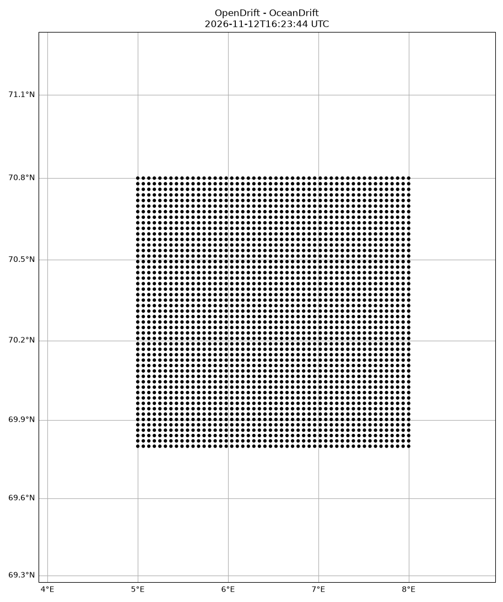
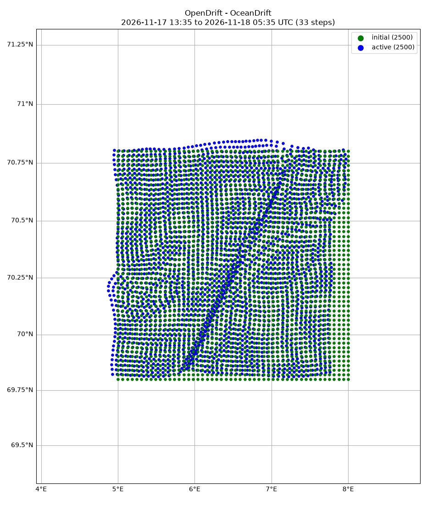

Note
Go to the end to download the full example code.
Reader boundary
Seeding elements around the border of a ocean model domain (NorKyst800) to demonstrate autmatic transition back and forth with another model covering a larger domain (Topaz).
from datetime import datetime
import numpy as np
from opendrift.readers import reader_netCDF_CF_generic
from opendrift.models.oceandrift import OceanDrift
o = OceanDrift(loglevel=20) # Set loglevel to 0 for debug information
# Norkyst
reader_norkyst = reader_netCDF_CF_generic.Reader('https://thredds.met.no/thredds/dodsC/fou-hi/norkystv3_800m_m00_be')
# Topaz
reader_topaz = reader_netCDF_CF_generic.Reader('https://thredds.met.no/thredds/dodsC/cmems/topaz6/dataset-topaz6-arc-15min-3km-be.ncml')
o.add_reader([reader_norkyst, reader_topaz])
o.set_config('environment:fallback:land_binary_mask', 0)
o.set_config('drift:vertical_mixing', False)
16:23:32 INFO opendrift:579: OpenDriftSimulation initialised (version 1.14.11 / v1.14.12-75-gf9e7122)
16:23:32 INFO opendrift.readers:67: Opening file with xr.open_dataset
16:23:37 INFO opendrift.readers.reader_netCDF_CF_generic:340: Detected dimensions: {'x': 'X', 'y': 'Y', 'z': 'depth', 'time': 'time'}
16:23:37 INFO opendrift.readers.basereader:175: Variable x_sea_water_velocity will be rotated from eastward_sea_water_velocity
16:23:37 INFO opendrift.readers.basereader:175: Variable y_sea_water_velocity will be rotated from northward_sea_water_velocity
16:23:37 INFO opendrift.readers.basereader:175: Variable x_wind will be rotated from eastward_wind
16:23:37 INFO opendrift.readers.basereader:175: Variable y_wind will be rotated from northward_wind
16:23:37 INFO opendrift.readers:67: Opening file with xr.open_dataset
16:23:44 INFO opendrift.readers.reader_netCDF_CF_generic:340: Detected dimensions: {'x': 'x', 'y': 'y', 'time': 'time'}
Seeding some particles
lons = np.linspace(5, 8, 50)
lats = np.linspace(69.8, 70.8, 50)
lons, lats = np.meshgrid(lons, lats)
Seed oil elements at defined position and time
o.seed_elements(lons, lats, radius=0, number=2500,
time=datetime.now())
16:23:44 INFO opendrift.models.basemodel.environment:203: Adding a global landmask from GSHHG
16:23:50 INFO opendrift.models.basemodel.environment:227: Fallback values will be used for the following variables which have no readers:
16:23:50 INFO opendrift.models.basemodel.environment:230: horizontal_diffusivity: 0.000000
16:23:50 INFO opendrift.models.basemodel.environment:230: sea_surface_wave_significant_height: 0.000000
16:23:50 INFO opendrift.models.basemodel.environment:230: sea_surface_wave_stokes_drift_x_velocity: 0.000000
16:23:50 INFO opendrift.models.basemodel.environment:230: sea_surface_wave_stokes_drift_y_velocity: 0.000000
16:23:50 INFO opendrift.models.basemodel.environment:230: ocean_mixed_layer_thickness: 50.000000
Running model
o.run(steps=16*4, time_step=900, time_step_output=1800)
16:23:50 INFO opendrift:1921: Skipping environment variable ocean_vertical_diffusivity because of condition ['drift:vertical_mixing', 'is', False]
16:23:50 INFO opendrift:1921: Skipping environment variable ocean_mixed_layer_thickness because of condition ['drift:vertical_mixing', 'is', False]
16:23:50 INFO opendrift:1932: Storing previous values of element property lon because of condition (('general:coastline_action', 'in', ['stranding', 'previous']), 'or', ('general:seafloor_action', 'in', ['previous']))
16:23:50 INFO opendrift:1932: Storing previous values of element property lat because of condition (('general:coastline_action', 'in', ['stranding', 'previous']), 'or', ('general:seafloor_action', 'in', ['previous']))
16:23:50 INFO opendrift:1940: Storing previous values of environment variable sea_surface_height because of condition ['drift:vertical_advection', 'is', True]
16:23:50 INFO opendrift:968: Using existing reader for land_binary_mask to move elements to ocean
16:23:50 INFO opendrift:1000: All points are in ocean
16:23:50 INFO opendrift:2248: 2026-11-12 16:23:44.062323 - step 1 of 64 - 2500 active elements (0 deactivated)
16:24:11 INFO opendrift:2248: 2026-11-12 16:38:44.062323 - step 2 of 64 - 2500 active elements (0 deactivated)
16:24:14 INFO opendrift:2248: 2026-11-12 16:53:44.062323 - step 3 of 64 - 2500 active elements (0 deactivated)
16:24:16 INFO opendrift:2248: 2026-11-12 17:08:44.062323 - step 4 of 64 - 2500 active elements (0 deactivated)
16:24:26 INFO opendrift:2248: 2026-11-12 17:23:44.062323 - step 5 of 64 - 2500 active elements (0 deactivated)
16:24:30 INFO opendrift:2248: 2026-11-12 17:38:44.062323 - step 6 of 64 - 2500 active elements (0 deactivated)
16:24:32 INFO opendrift:2248: 2026-11-12 17:53:44.062323 - step 7 of 64 - 2500 active elements (0 deactivated)
16:24:34 INFO opendrift:2248: 2026-11-12 18:08:44.062323 - step 8 of 64 - 2500 active elements (0 deactivated)
16:24:45 INFO opendrift:2248: 2026-11-12 18:23:44.062323 - step 9 of 64 - 2500 active elements (0 deactivated)
16:24:47 INFO opendrift:2248: 2026-11-12 18:38:44.062323 - step 10 of 64 - 2500 active elements (0 deactivated)
16:24:49 INFO opendrift:2248: 2026-11-12 18:53:44.062323 - step 11 of 64 - 2500 active elements (0 deactivated)
16:24:51 INFO opendrift:2248: 2026-11-12 19:08:44.062323 - step 12 of 64 - 2500 active elements (0 deactivated)
16:25:01 INFO opendrift:2248: 2026-11-12 19:23:44.062323 - step 13 of 64 - 2500 active elements (0 deactivated)
16:25:03 INFO opendrift:2248: 2026-11-12 19:38:44.062323 - step 14 of 64 - 2500 active elements (0 deactivated)
16:25:04 INFO opendrift:2248: 2026-11-12 19:53:44.062323 - step 15 of 64 - 2500 active elements (0 deactivated)
16:25:06 INFO opendrift:2248: 2026-11-12 20:08:44.062323 - step 16 of 64 - 2500 active elements (0 deactivated)
16:25:15 INFO opendrift:2248: 2026-11-12 20:23:44.062323 - step 17 of 64 - 2500 active elements (0 deactivated)
16:25:17 INFO opendrift:2248: 2026-11-12 20:38:44.062323 - step 18 of 64 - 2500 active elements (0 deactivated)
16:25:18 INFO opendrift:2248: 2026-11-12 20:53:44.062323 - step 19 of 64 - 2500 active elements (0 deactivated)
16:25:20 INFO opendrift:2248: 2026-11-12 21:08:44.062323 - step 20 of 64 - 2500 active elements (0 deactivated)
16:25:29 INFO opendrift:2248: 2026-11-12 21:23:44.062323 - step 21 of 64 - 2500 active elements (0 deactivated)
16:25:31 INFO opendrift:2248: 2026-11-12 21:38:44.062323 - step 22 of 64 - 2500 active elements (0 deactivated)
16:25:33 INFO opendrift:2248: 2026-11-12 21:53:44.062323 - step 23 of 64 - 2500 active elements (0 deactivated)
16:25:35 INFO opendrift:2248: 2026-11-12 22:08:44.062323 - step 24 of 64 - 2500 active elements (0 deactivated)
16:25:47 INFO opendrift:2248: 2026-11-12 22:23:44.062323 - step 25 of 64 - 2500 active elements (0 deactivated)
16:25:50 INFO opendrift:2248: 2026-11-12 22:38:44.062323 - step 26 of 64 - 2500 active elements (0 deactivated)
16:25:52 INFO opendrift:2248: 2026-11-12 22:53:44.062323 - step 27 of 64 - 2500 active elements (0 deactivated)
16:25:53 INFO opendrift:2248: 2026-11-12 23:08:44.062323 - step 28 of 64 - 2500 active elements (0 deactivated)
16:26:06 INFO opendrift:2248: 2026-11-12 23:23:44.062323 - step 29 of 64 - 2500 active elements (0 deactivated)
16:26:08 INFO opendrift:2248: 2026-11-12 23:38:44.062323 - step 30 of 64 - 2500 active elements (0 deactivated)
16:26:10 INFO opendrift:2248: 2026-11-12 23:53:44.062323 - step 31 of 64 - 2500 active elements (0 deactivated)
16:26:12 INFO opendrift:2248: 2026-11-13 00:08:44.062323 - step 32 of 64 - 2500 active elements (0 deactivated)
16:26:22 INFO opendrift:2248: 2026-11-13 00:23:44.062323 - step 33 of 64 - 2500 active elements (0 deactivated)
16:26:24 INFO opendrift:2248: 2026-11-13 00:38:44.062323 - step 34 of 64 - 2500 active elements (0 deactivated)
16:26:26 INFO opendrift:2248: 2026-11-13 00:53:44.062323 - step 35 of 64 - 2500 active elements (0 deactivated)
16:26:27 INFO opendrift:2248: 2026-11-13 01:08:44.062323 - step 36 of 64 - 2500 active elements (0 deactivated)
16:26:41 INFO opendrift:2248: 2026-11-13 01:23:44.062323 - step 37 of 64 - 2500 active elements (0 deactivated)
16:26:43 INFO opendrift:2248: 2026-11-13 01:38:44.062323 - step 38 of 64 - 2500 active elements (0 deactivated)
16:26:44 INFO opendrift:2248: 2026-11-13 01:53:44.062323 - step 39 of 64 - 2500 active elements (0 deactivated)
16:26:46 INFO opendrift:2248: 2026-11-13 02:08:44.062323 - step 40 of 64 - 2500 active elements (0 deactivated)
16:26:58 INFO opendrift:2248: 2026-11-13 02:23:44.062323 - step 41 of 64 - 2500 active elements (0 deactivated)
16:26:59 INFO opendrift:2248: 2026-11-13 02:38:44.062323 - step 42 of 64 - 2500 active elements (0 deactivated)
16:27:01 INFO opendrift:2248: 2026-11-13 02:53:44.062323 - step 43 of 64 - 2500 active elements (0 deactivated)
16:27:03 INFO opendrift:2248: 2026-11-13 03:08:44.062323 - step 44 of 64 - 2500 active elements (0 deactivated)
16:27:15 INFO opendrift:2248: 2026-11-13 03:23:44.062323 - step 45 of 64 - 2500 active elements (0 deactivated)
16:27:17 INFO opendrift:2248: 2026-11-13 03:38:44.062323 - step 46 of 64 - 2500 active elements (0 deactivated)
16:27:19 INFO opendrift:2248: 2026-11-13 03:53:44.062323 - step 47 of 64 - 2500 active elements (0 deactivated)
16:27:20 INFO opendrift:2248: 2026-11-13 04:08:44.062323 - step 48 of 64 - 2500 active elements (0 deactivated)
16:27:30 INFO opendrift:2248: 2026-11-13 04:23:44.062323 - step 49 of 64 - 2500 active elements (0 deactivated)
16:27:32 INFO opendrift:2248: 2026-11-13 04:38:44.062323 - step 50 of 64 - 2500 active elements (0 deactivated)
16:27:34 INFO opendrift:2248: 2026-11-13 04:53:44.062323 - step 51 of 64 - 2500 active elements (0 deactivated)
16:27:36 INFO opendrift:2248: 2026-11-13 05:08:44.062323 - step 52 of 64 - 2500 active elements (0 deactivated)
16:27:49 INFO opendrift:2248: 2026-11-13 05:23:44.062323 - step 53 of 64 - 2500 active elements (0 deactivated)
16:27:51 INFO opendrift:2248: 2026-11-13 05:38:44.062323 - step 54 of 64 - 2500 active elements (0 deactivated)
16:27:54 INFO opendrift:2248: 2026-11-13 05:53:44.062323 - step 55 of 64 - 2500 active elements (0 deactivated)
16:27:56 INFO opendrift:2248: 2026-11-13 06:08:44.062323 - step 56 of 64 - 2500 active elements (0 deactivated)
16:28:07 INFO opendrift:2248: 2026-11-13 06:23:44.062323 - step 57 of 64 - 2500 active elements (0 deactivated)
16:28:09 INFO opendrift:2248: 2026-11-13 06:38:44.062323 - step 58 of 64 - 2500 active elements (0 deactivated)
16:28:11 INFO opendrift:2248: 2026-11-13 06:53:44.062323 - step 59 of 64 - 2500 active elements (0 deactivated)
16:28:12 INFO opendrift:2248: 2026-11-13 07:08:44.062323 - step 60 of 64 - 2500 active elements (0 deactivated)
16:28:24 INFO opendrift:2248: 2026-11-13 07:23:44.062323 - step 61 of 64 - 2500 active elements (0 deactivated)
16:28:26 INFO opendrift:2248: 2026-11-13 07:38:44.062323 - step 62 of 64 - 2500 active elements (0 deactivated)
16:28:27 INFO opendrift:2248: 2026-11-13 07:53:44.062323 - step 63 of 64 - 2500 active elements (0 deactivated)
16:28:29 INFO opendrift:2248: 2026-11-13 08:08:44.062323 - step 64 of 64 - 2500 active elements (0 deactivated)
Print and plot results
print(o)
o.animation(fast=True)
===========================
--------------------
Reader performance:
--------------------
https://thredds.met.no/thredds/dodsC/fou-hi/norkystv3_800m_m00_be
0:02:44.1 total
0:00:00.0 preparing
0:02:43.7 reading
0:00:00.3 interpolation
0:00:00.0 interpolation_time
0:00:00.3 rotating vectors
0:00:00.0 masking
--------------------
https://thredds.met.no/thredds/dodsC/cmems/topaz6/dataset-topaz6-arc-15min-3km-be.ncml
0:02:04.8 total
0:00:00.0 preparing
0:02:04.7 reading
0:00:00.0 interpolation
0:00:00.0 interpolation_time
0:00:00.1 rotating vectors
0:00:00.0 masking
--------------------
global_landmask
0:00:00.0 total
0:00:00.0 preparing
0:00:00.0 reading
0:00:00.0 masking
--------------------
Performance:
5:09.7 total time
18.3 configuration
0.1 preparing main loop
0.0 moving elements to ocean
4:51.3 main loop
0.2 updating elements
0.0 cleaning up
--------------------
===========================
Model: OceanDrift (OpenDrift version 1.14.11)
2500 active Lagrangian3DArray particles (0 deactivated, 0 scheduled)
-------------------
Environment variables:
-----
sea_floor_depth_below_sea_level
sea_surface_height
x_sea_water_velocity
y_sea_water_velocity
1) https://thredds.met.no/thredds/dodsC/fou-hi/norkystv3_800m_m00_be
2) https://thredds.met.no/thredds/dodsC/cmems/topaz6/dataset-topaz6-arc-15min-3km-be.ncml
-----
upward_sea_water_velocity
x_wind
y_wind
1) https://thredds.met.no/thredds/dodsC/fou-hi/norkystv3_800m_m00_be
-----
land_binary_mask
1) global_landmask
-----
Readers not added for the following variables:
horizontal_diffusivity
sea_surface_wave_significant_height
sea_surface_wave_stokes_drift_x_velocity
sea_surface_wave_stokes_drift_y_velocity
Discarded readers:
Time:
Start: 2026-11-12 16:23:44.062323 UTC
Present: 2026-11-13 08:23:44.062323 UTC
Calculation steps: 64 * 0:15:00 - total time: 16:00:00
Output steps: 33 * 0:30:00
===========================
16:28:41 WARNING opendrift:2624: Plotting fast. This will make your plots less accurate.
16:28:43 INFO opendrift:4899: Saving animation to /root/project/docs/source/gallery/animations/example_reader_boundary_0.gif...
16:28:57 INFO opendrift:3307: Time to make animation: 0:00:15.319943

o.plot(fast=True)

16:28:57 WARNING opendrift:2624: Plotting fast. This will make your plots less accurate.
(<GeoAxes: title={'center': 'OpenDrift - OceanDrift\n2026-11-12 16:23 to 2026-11-13 08:23 UTC (33 steps)'}>, <Figure size 913.994x1100 with 1 Axes>)
Total running time of the script: (5 minutes 38.871 seconds)